Classification of CNS Neoplasms
Orienting framework for every disease in this section — not itself a graded LO, so no vignette or quiz here. This is the classification tree the whole index hangs off of; come back to it whenever a question turns on which family a tumor belongs to.
Malignant gliomas make up about 70% of malignant primary brain tumors diagnosed annually. Survival is grim without treatment: 12–15 months for glioblastoma, 2–5 years for anaplastic gliomas. Classification used to be based purely on histopathology and aggressiveness grading; it has since been revolutionized by cell genetics, and further changes are expected as more tumor-associated genes are discovered.
- Gliomas — tumors of glial cell origin
- Tumors of neuroglial origin
- Non-infiltrating: Pilocytic astrocytoma
- Diffuse (infiltrating): astrocytic/oligodendroglial appearance, split by IDH mutation status (see Gliomas overview)
- Tumors of neuronal origin — Ganglion cell tumors
- Embryonal tumors (neuroblastomas) — Medulloblastoma
- Tumors of neuroglial origin
- PNS Tumors — Schwannomas, Neurofibromas, Neuroblastomas
- Meningeal Tumors
- Tumors of meningothelial cells — Meningiomas
- Tumors of mesenchymal cells
- Miscellaneous tumors
- Hereditary Tumor Syndromes — Neurofibromatosis
- Germ-Cell Tumors — Teratomas, Embryonal Carcinomas, Choriocarcinomas, Mixed-Germ Cell Tumors
- Lymphomas — CNS Lymphomas
- Paraneoplastic Syndromes
- Metastatic Disease — Metastatic tumors
Ependymomas and craniopharyngiomas, and tuberous sclerosis, don't appear as separate branches on this specific classification page but are built as their own panels in this index per the assignment's disease list.
The 2021 WHO classification is built on detailed gene analysis plus histopathology, giving far more accurate diagnosis/prognosis and enabling individualized treatment. It has become the world standard for tumor diagnosis.
Classification hinges on the isocitrate dehydrogenase (IDH) enzyme:
- Wildtype (IDH-wt): catalyzes isocitrate → alpha-ketoglutarate (normal function)
- Mutant (IDH-mt): metabolizes isocitrate → 2-hydroxyglutarate, an oncometabolite that prevents DNA demethylation, leading to widespread hypermethylation
IDH-Mutant Tumors — Less Aggressive
- 40+% of Grade 2–3 astrocytomas are IDH-mt
- Only ~2% of Grade 4 astrocytomas are IDH-mt
- Tend to appear in younger patients
- Median age at dx: Grade 3 IDH-mt astrocytoma = 37; Grade 4 IDH-mt astrocytoma = 47
Subdivision Logic
IDH-wt gliomas are graded 2/3 vs. 4 by histocytology, with further differentiation possible via EGFR and TERT promoter mutations. Grade 3 = "anaplastic astrocytes"; Grade 4 = termed "secondary glioblastomas" in this source.
IDH-mt (IDH1/IDH2) gliomas are subdivided by presence/absence of the 1p/19q codeletion:
- No codeletion → graded 2/3/4 by histocytology; a CDKN2A mutation reclassifies the tumor as Grade 4 Glioblastoma (a.k.a. primary glioblastoma/glioblastoma multiforme)
- 1p/19q codeletion present → classified as oligodendroglioma, Grade 2 or 3
All Grade 3 gliomas are termed anaplastic gliomas — defined by increased cell density, atypical cell nuclei, vascular proliferation, and necrotic cells.
This page states Grade 4 IDH-wildtype gliomas are "typically termed secondary glioblastomas." Conventionally, primary/de novo GBM is IDH-wildtype and secondary GBM (progressing from a lower-grade astrocytoma) is IDH-mutant — the opposite pairing. Preserved here verbatim from the source since it may be tested as written; worth double-checking against the professor's slides or asking in class if this looks like a typo.
WHO now uses arabic numerals (1–4) instead of roman numerals to avoid confusion in pathology reports.
| Grade | Prognosis | Clinical Findings | Radiology | Histopathology | Examples |
|---|---|---|---|---|---|
| 1 | Variants of astrocytoma with excellent prognosis | Varied | Varied | Varied | Juvenile pilocytic astrocytoma; subependymal giant cell astrocytoma; pleomorphic xanthoastrocytoma |
| 2 | Can remain static or convert into a more aggressive tumor | Seizures, headaches, or localizing signs; age range 20–30; deterioration in ~93 months post-diagnosis | Vague hemispheric white matter hypodensities | Macro: poorly defined area of expanded, discolored white matter, often obscuring grey-white junctions. Micro: infiltrating astrocytic "naked nuclei" | Diffuse astrocytoma and oligodendroglioma — both IDH-wt and IDH-mt forms |
| 3 | More aggressive form of tumor | Edema and rapid clinical deterioration, ~12 months post-diagnosis | More cellular tumor with nuclear pleomorphism and mitotic figures | Anaplastic astrocytoma and anaplastic oligodendroglioma — both IDH-wt and IDH-mt forms | — |
| 4 | Most aggressive form of glial tumor; highly malignant, very poor prognosis | Very rapid deterioration, ~5 months post-diagnosis | Large mass with necrotic core; ring-enhancing lesion | Macro: variegated appearance with solid tissue, necrosis, hemorrhage. Micro: mitotic figures, necrosis, vascular endothelial proliferation ("glomeruloid") | Primary and secondary glioblastoma (multiforme) — both IDH-wt and IDH-mt forms |
Overview: Glioma Grading & Classification
Category-level framework for the five glioma panels in this section — not itself a graded LO, so no vignette or quiz here.
Gliomas are the most common of the primary brain tumors, including astrocytomas, oligodendrogliomas, and ependymomas. Two major forms are recognized:
- Narrow, non-infiltrating distributions — e.g. pilocytic astrocytoma
- Diffuse distributions — termed infiltrating astrocytomas and oligodendrogliomas
Grading is based on histopathology and genetics, and is a key criterion for diagnosis, prognosis, and treatment approach.
Grade I — Pilocytic Astrocytoma
Low proliferation, greatest possibility for cure of any glioma. Often has alterations in the MAPK pathway — the BRAF gene and the FGFR1 gene.
IDH-Wildtype
20–30% of low-grade gliomas are IDH-wildtype — and despite being "low-grade," these are typically more aggressive with worse prognosis than the equivalent-grade IDH-mutant form.
- Grade II — diffuse/low-grade astrocytoma & oligodendroglioma: increased cell proliferation and infiltration
- Grade III — diffuse anaplastic astrocytoma & anaplastic oligodendroglioma: increased proliferation and infiltration
- Grade IV — glioblastoma (a.k.a. glioblastoma multiforme): severe proliferation and infiltration
IDH-Mutant (IDH1 or IDH2)
70–80% of low-grade gliomas are the IDH-mutant form — these are generally less aggressive than their equivalent-grade wildtype counterpart.
- Grade II/III IDH1/IDH2 — astrocytoma and oligodendroglioma
- Grade IV IDH1/IDH2
This page states IDH-mt tumors are 70–80% of low-grade gliomas overall, while the Classification overview states IDH-mt tumors are "40+%" of Grade 2–3 astrocytomas specifically. Both are transcribed as given rather than reconciled — they likely reflect different denominators (all low-grade gliomas, including oligodendrogliomas which skew heavily IDH-mt/codeleted, vs. astrocytomas alone).
Pilocytic Astrocytoma
Grade I, non-infiltrating. LO 1–3.
IDH-wt Grade II/III
Infiltrating, more aggressive than IDH-mt equivalent. LO 1–2.
IDH-wt Grade IV
Glioblastoma. LO 1–2.
IDH-mt Grade II/III
Infiltrating, less aggressive, younger patients. LO 1–3.
IDH-mt Grade IV
Secondary glioblastoma. LO 1–3.
Pilocytic Astrocytoma
"A 10-year-old boy is brought in by his parents for a two-month history of morning headaches with vomiting and increasing clumsiness. His parents report he has been bumping into furniture and has developed a wide-based, unsteady gait. Examination reveals dysmetria on finger-to-nose testing and truncal ataxia. Fundoscopic exam shows bilateral papilledema. MRI of the brain shows a well-circumscribed cystic mass in the right cerebellar hemisphere with an enhancing mural nodule, displacing the fourth ventricle. Which of the following is the most likely diagnosis?"
Two major forms of astrocyte-derived tumors are recognized: narrow, non-infiltrating (pilocytic astrocytoma) and diffuse (traditionally termed "astrocytomas"). Pilocytic astrocytoma is the WHO Grade I glioma — a relatively benign, slow-growing astrocytoma of children, typically seen in the cerebellum. Synonyms: spongioblastoma, juvenile astrocytoma.
Accounts for ~6% of intracranial tumors; incidence >1 per 100,000/year. It is the most frequent brain tumor of infants, with peak incidence at 8–13 years of age.
Location by Age
- Older children: cerebral hemispheres and spinal cord
- Younger children: optic nerve, optic chiasm, brainstem, cerebellum
Frequency of Distribution (Descending)
- Cerebellum
- Optic nerve and chiasm
- Cerebral hemisphere — medial temporal lobe
- Brainstem
Because growth is slow, clinical history often precedes diagnosis by months to years. Prognosis with resection is favorable — this is the most curable glioma, with median survival >10 years and cure possible with complete surgical resection.
- Cerebellum: ataxia + increased ICP (morning headache, vomiting, papilledema)
- Optic pathway: decreasing visual acuity
- Hypothalamus: endocrine abnormalities
- Brainstem: cranial nerve deficits
- Cerebral hemisphere: seizures + increased ICP
Pilocytic astrocytoma is more typically lateralized within a cerebellar hemisphere; medulloblastoma is more typically midline (vermian) — useful for distinguishing the two both by exam findings and on imaging.
| Modality | Finding |
|---|---|
| MRI | Well-circumscribed cystic lesion with a bright, contrast-enhancing solid mural nodule in the cyst wall |
| CT | Adjunct imaging alongside MRI |
| Stereotactic biopsy/cytology | Confirms diagnosis when resection is not immediately planned |
| Histopathology | GFAP-positive; microcysts; bipolar cells with hair-like projections; eosinophilic corkscrew-shaped Rosenthal fibers |
| Genetics | ~70–75% harbor a BRAF gene alteration (MAPK pathway) |
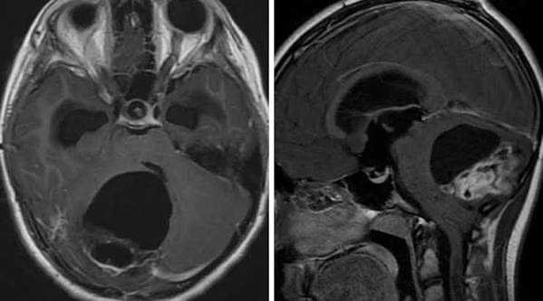
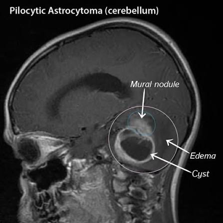
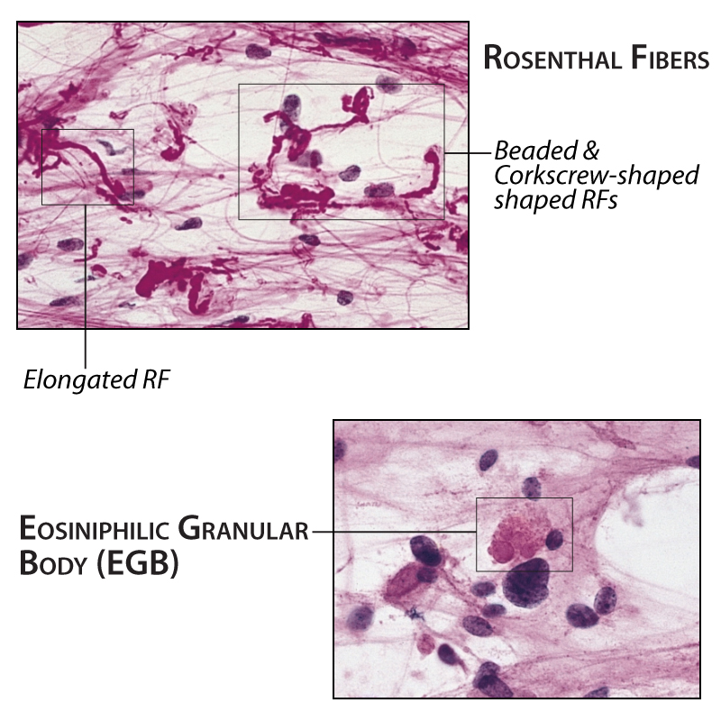
Rosenthal fibers (eosinophilic, corkscrew-shaped) and GFAP positivity on histology, combined with the classic "cyst with an enhancing mural nodule" MRI appearance, are the two highest-yield patterns for recognizing pilocytic astrocytoma on boards.
Glioma IDH-wt Grade II/III
"A 58-year-old man presents with three weeks of worsening headaches, subtle personality changes noted by his wife, and one episode of word-finding difficulty. He has no significant past medical history. Examination reveals mild expressive aphasia. MRI of the brain shows an infiltrative, non-necrotic mass centered in the left temporal lobe extending into the frontal lobe, with mild surrounding edema and no significant contrast enhancement. Molecular testing of the resected tissue shows no IDH1/IDH2 mutation. Which of the following best characterizes this tumor's expected clinical course?"
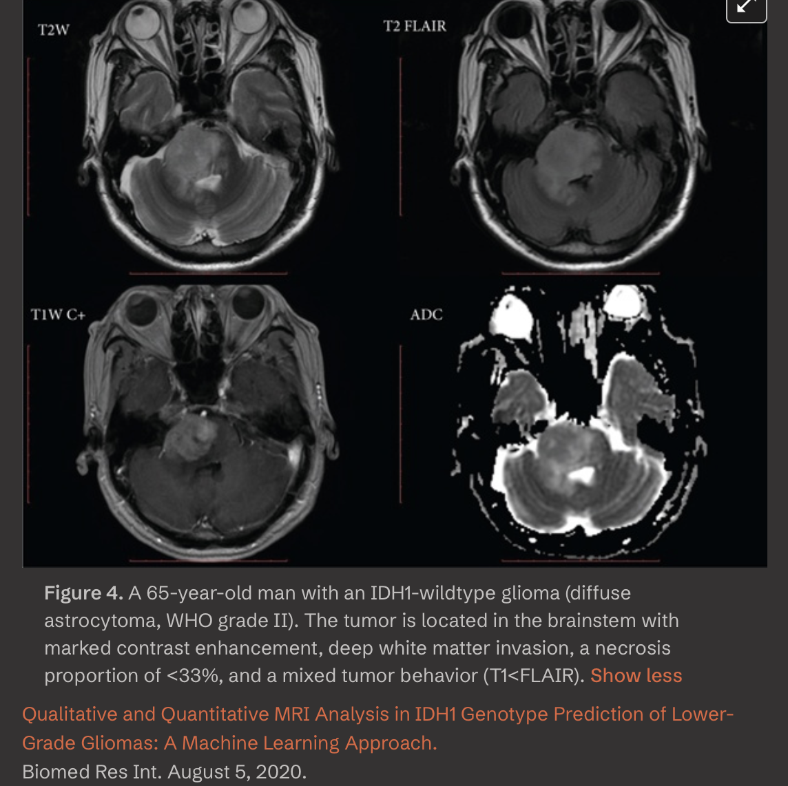
Grade II/III astrocytomas carrying wildtype IDH are rare but aggressive tumors that typically occur in older individuals, with a worse prognosis than the equivalent-grade IDH-mutant (IDH1/2) astrocytoma. Synonyms: well-differentiated astrocytoma, fibrillary diffuse astrocytoma, low-grade astrocytoma, "astrocytoma" (Grade II); Grade III gliomas are often termed anaplastic gliomas.
This IDH-wt Grade II/III subgroup is a heterogeneous, rare form of diffuse tumor. Median age at diagnosis ~55 years; males > females. Prognosis is dismal with poor response to known treatments — Grade III tumors show greater metastatic potential and shorter overall survival than Grade II tumors.
Pathology / Distribution
Broad distribution in the brain; commonly the temporal lobe extending into the base of the frontal lobe. Infiltrative, with low-to-moderate cellular density.
Histopathology (Grade II → III)
Cellular and nuclear atypia; hypercellularity — both worsen going from Grade II to Grade III. Lacking significant features of Grade IV glioma such as vascular proliferation and tissue necrosis.
- TERT promoter (TERTp) mutation — Telomerase Reverse Transcriptase promoter
- EGFR mutation — Epidermal Growth Factor Receptor
- PTEN — Phosphatase and Tensin Homolog
- TP53 — the most common mutation (49%) in low-grade gliomas; drives progression to higher grade
- CDKN2A/B homozygous deletion — cyclin-dependent kinase; leads to a rapidly growing tumor that transforms to glioblastoma (Grade IV) with very poor prognosis
- 7+, 10− — chromosome 7 gain, chromosome 9 loss
If an IDH-wt Grade II/III glioma expresses TERTp mutation, EGFR mutation, or the 7+, 10− chromosomal signature, it is reclassified as a Grade IV Glioblastoma — termed "secondary glioblastoma" in this source.
- Seizures
- Headaches
- Cognitive changes
- Focal neurologic signs related to tumor location
Don't be fooled by a "low-grade-looking" astrocytoma on histology in an older patient — IDH-wildtype status alone is enough to predict an aggressive course, independent of grade. Always check IDH status, not just histologic grade.
Glioma IDH-wt Grade IV (Glioblastoma)
"A 66-year-old man presents with a two-week history of progressively worsening headaches, new-onset word-finding difficulty, and one witnessed focal seizure with secondary generalization. His wife also notes several weeks of personality change and increasing forgetfulness. Examination shows mild right-sided pronator drift, expressive aphasia, and papilledema. MRI of the brain with gadolinium reveals a large, heterogeneous, ring-enhancing mass in the left frontal lobe with a necrotic center, extending across the corpus callosum into the right frontal lobe, surrounded by extensive T2/FLAIR signal abnormality. Molecular testing shows no IDH1/IDH2 mutation. Which of the following is the most likely diagnosis?"
Diffuse IDH-wildtype Grade 4 gliomas — glioblastoma — are the most common form of primary malignant brain tumor and the most aggressive in local spread. The tumor carries a normally functioning (wildtype) IDH enzyme but expresses at least one of: EGFR amplification, TERT promoter mutation, or the 7+, 10− chromosomal signature. Its older name, "glioblastoma multiforme," is no longer recommended.
Epidemiology
- Most common and most malignant glioma; >90% of all glioblastomas are IDH-wildtype
- Incidence ~3–6 per 100,000/year; >50% of all primary malignant brain tumors, ~14% of all CNS tumors
- Median age at diagnosis 64–66 years; incidence peaks at 74–84
- Males > females (~1.3:1); highest in non-Hispanic white populations
- 1-year overall survival ~53.7%
Etiology
- Sporadic in the vast majority of cases; cause largely unknown
- Only well-established environmental risk factor: ionizing radiation (e.g. prior cranial irradiation)
- <5% familial — Li-Fraumeni (TP53), NF1, Lynch/Turcot syndrome, Cowden disease (PTEN)
- Atopic disease history (asthma, eczema, allergies) is inversely associated with risk
- No convincing link to cell phone use, occupational exposure, or diet
Per WHO 2021, diagnosis requires a diffusely infiltrative IDH-wildtype astrocytic glioma with either classic Grade 4 histology (necrosis and/or microvascular proliferation) or at least one molecular hallmark: EGFR amplification, combined gain of chromosome 7/loss of chromosome 10 (+7/−10), or a TERT promoter mutation.
Rapid growth, diffuse infiltration, high recurrence rate — most commonly supratentorial white matter. Highly infiltrative along white matter tracts, perivascular spaces, and the subpial zone, making complete resection essentially impossible.
- Cellular pleomorphism
- Nuclear atypia, frequent mitotic figures
- Microvascular proliferation
- Pseudopalisading necrosis
Frequently co-occurring alterations: EGFR amplification, PTEN mutation/loss, CDKN2A/B homozygous deletion, TERT promoter mutation. MGMT promoter methylation (~35–45% of cases) is an important favorable prognostic biomarker. IDH-wildtype status means these tumors lack the D-2-hydroxyglutarate oncometabolite and the associated G-CIMP phenotype that characterizes the more favorable IDH-mutant gliomas.
Without any treatment (best supportive care only), prognosis is uniformly fatal and rapidly progressive — historical trials showed median survival of only 3.5–5.2 months with supportive care after surgery alone (e.g. the ANOCEF trial: 3.9 months in patients >70; the Brain Tumour Study Group 69-01 trial: ~14 weeks).
Even with standard treatment, median OS improves only to ~12–17 months, and 5-year survival is just ~2–7%. MGMT-methylated tumors: ~17.1 months vs. ~12.4 months for unmethylated tumors — MGMT status is one of the strongest prognostic factors, alongside age, performance status, and extent of resection.
Symptoms typically develop over days to weeks, reflecting the tumor's rapid growth kinetics — much faster than the insidious course of lower-grade gliomas.
- Headache (~30–38%): more common than in low-grade gliomas; often progressive, worse in the morning, with nausea/vomiting
- Cognitive decline / behavioral change (~36%): memory impairment, personality change, executive dysfunction, confusion — especially with frontal or temporal involvement
- Seizures (~24%): new focal seizures ± secondary generalization — notably less common here than in lower-grade gliomas (24% vs. 58%)
- Focal neurologic deficits (~20% each for motor deficits and aphasia): hemiparesis, hemisensory loss, visual field cuts, language disturbance
- Signs of raised ICP: papilledema, nausea/vomiting, altered consciousness — especially with obstructive hydrocephalus
On neuroimaging, glioblastoma classically appears as a large, heterogeneous, ring-enhancing mass with central necrosis on gadolinium-enhanced MRI, surrounded by extensive T2/FLAIR signal abnormality representing vasogenic edema and infiltrating tumor. The "butterfly glioma" pattern — bilateral extension across the corpus callosum — is characteristic but not universal.
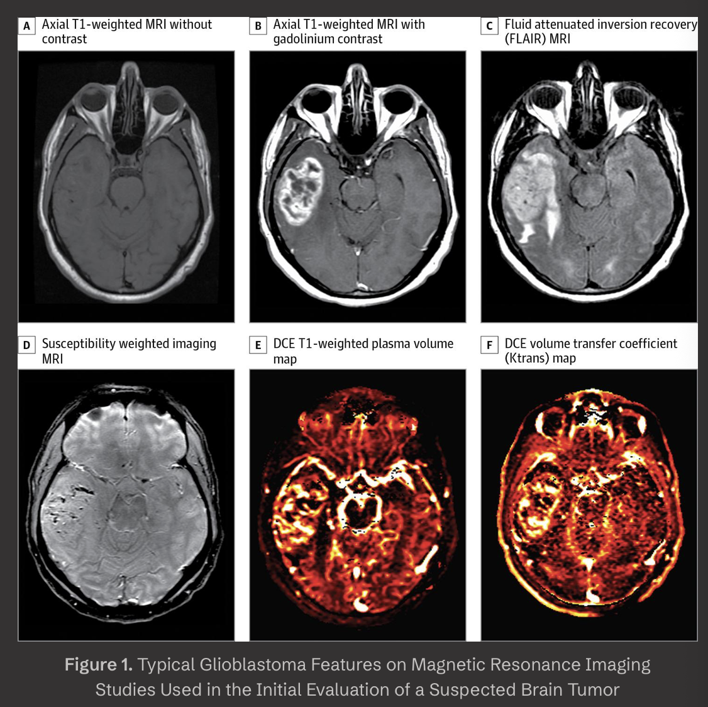
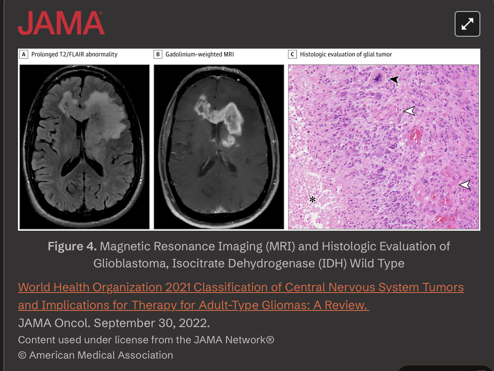
Some molecularly defined glioblastomas — reclassified from histologically lower-grade astrocytomas based on molecular markers alone (EGFR amp / +7,−10 / TERTp, without necrosis or microvascular proliferation on the slide) — can present atypically, as expansile, T2-hyperintense lesions with minimal or no contrast enhancement, mimicking a lower-grade glioma radiographically. Don't let a "bland-looking" MRI rule out glioblastoma if the molecular markers say otherwise.
Glioma IDH-mt Grade II/III
"A 38-year-old woman presents after her first-ever witnessed seizure. She has no prior neurologic history, and her neurologic exam is entirely normal. MRI of the brain shows a nonenhancing, T2/FLAIR-hyperintense lesion in the left frontal lobe with well-defined borders and minimal mass effect; the lesion is homogeneously hyperintense on T2 but shows a thin hypointense rim on FLAIR. Biopsy shows positive IDH1 R132H immunohistochemistry, loss of ATRX expression, and a negative 1p/19q codeletion test. Which of the following is the most likely diagnosis?"
Diffuse Grade 2/3 IDH1- or IDH2-mutant gliomas are classified molecularly as either astrocytomas or oligodendrogliomas. They are slow-growing (indolent), located in the cerebral white matter, and carry a host of co-associating gene mutations — accounting for roughly 15–20% of all diffuse gliomas in adults.
Incidence ~0.5–1.0 per 100,000 person-years (Grade 2 and 3 similar). Onset peaks at 35–44 years — much younger than IDH-wildtype glioma. Slight male predominance (1.3:1); most frequent in the white population. No definitive environmental risk factor is established; the IDH mutation is thought to be an early, likely initiating event in gliomagenesis.
Co-Associating Mutations
- 1p/19q codeleted → tumor is termed oligodendroglioma, not astrocytoma
- TP53 (tumor suppressor) → astrocytic lineage
- ATRX loss → astrocytic lineage
- TERT (telomerase reverse transcriptase)
- CDKN2A homozygous deletion → upgrades to Grade 4 regardless of histology
Distribution
Diffuse cerebral white matter tumor; some forms also involve temporal white matter. Shows a frontal lobe predominance, often adjacent to the rostral lateral ventricles and within eloquent cortex (motor/language/cognitive areas).
Grade 2: well-differentiated astrocytes, moderately increased cellularity/atypia, no or very few mitoses. Grade 3 (formerly "anaplastic astrocytoma"): increased cellularity, distinct nuclear atypia, marked mitotic activity — but, unlike Grade 4, still lacks necrosis and microvascular proliferation.
Homozygous CDKN2A/B deletion upgrades the tumor to Grade 4 regardless of how benign the histology looks — always check this even on a slide that otherwise reads as Grade 2/3.
These tumors grow continuously but slowly (~4 mm/year), infiltrate normal brain tissue, and inevitably recur — the natural history is one of relentless progression to higher grade with accelerated growth and neovascularization over time. Median overall survival is ~7–11 years; even a "biopsy-only," minimal-intervention cohort showed a median OS of 5.6 years (vs. 10.2 years with resection), underscoring how much of this trajectory reflects the tumor's intrinsic behavior. IDH-mutant astrocytomas progress faster than IDH-mutant oligodendrogliomas.
First-time seizure is the most common presenting symptom, especially for Grade 2 tumors — possibly related to 2-HG's structural similarity to glutamate, which may contribute to cortical excitability.
- Headaches (~40% of patients at presentation)
- Focal neurologic deficits (limb weakness, language difficulty) depending on tumor location
- Symptoms of intracranial hypertension (nausea, vomiting)
The indolent course often produces subtle symptoms that get overlooked, delaying diagnosis — median time from symptom onset to surgery is ~5–6.5 weeks. Most patients have excellent functional status at diagnosis (ECOG 0 in ~93%).
| Imaging Feature | Grade 2 | Grade 3 |
|---|---|---|
| Contrast enhancement | Typically nonenhancing | More likely to enhance |
| ADC values | High | Lower |
| rCBV (perfusion) | Low | Higher |
A homogeneously T2-hyperintense lesion that is hypointense on FLAIR with a hyperintense peripheral rim. Highly specific (~99%) but insensitive (~42%) for IDH-mutant, 1p/19q-non-codeleted astrocytoma — reflects microcystic change and is associated with a favorable prognosis and intact CDKN2A/B status.
| Test | Purpose |
|---|---|
| IDH1 R132H immunohistochemistry | Initial screen; detects ~90% of IDH mutations |
| IDH1/IDH2 sequencing | Performed if R132H IHC is negative — catches the remaining ~10% |
| ATRX loss / TP53 mutation (IHC) | Supports astrocytic lineage; can substitute for 1p/19q testing in some cases |
| 1p/19q codeletion (FISH/molecular) | Distinguishes astrocytoma (no codeletion) from oligodendroglioma (codeleted) |
| CDKN2A/B homozygous deletion | Critical — presence upgrades the tumor to Grade 4 |
IDH1 R132H IHC alone catches only ~90% of IDH mutations — a negative IHC does NOT rule out an IDH mutation. Sequencing is required to catch the remaining rarer IDH1 non-R132H and IDH2 mutations.
Glioma IDH-mt Grade IV
"A 22-year-old man with a known history of a low-grade IDH-mutant astrocytoma diagnosed three years ago presents with a new generalized tonic-clonic seizure and two weeks of worsening headaches. Repeat MRI of the brain now shows a large, infiltrative, ring-enhancing mass with a necrotic core in the left frontal lobe, larger and more aggressive-appearing than his prior imaging. Repeat biopsy confirms an IDH1-mutant astrocytic glioma with vascular proliferation and necrosis, and no 1p/19q codeletion. Which of the following best describes this tumor?"
Grade 4 IDH-mutant gliomas are very aggressive diffuse tumors. Although malignant, they carry a better prognosis than the IDH-wildtype Grade 4 counterpart.
Epidemiology
- Most common in adolescents and young adults
- Rare in younger children (under 9 years of age)
- Median age at diagnosis 47 years
- Median overall survival 21–42 months
- Slight male predominance
Etiology
Genetic mutations. Typically evolves from a lower-grade IDH-mutant glioma rather than arising de novo.
Vascular (microvascular) proliferation and tumor necrosis — histologically indistinguishable from IDH-wildtype Grade 4 glioma. Predominant frontal lobe location.
Despite being histologically Grade 4 (necrosis + vascular proliferation, same as glioblastoma), retained IDH-mutant status confers a meaningfully better prognosis than the IDH-wildtype Grade 4 counterpart — median OS 21–42 months vs. ~12–18 months for IDH-wildtype glioblastoma.
This tumor is the genuine "secondary glioblastoma" of classic teaching — it typically arises via transformation from a lower-grade IDH-mutant astrocytoma, unlike IDH-wildtype glioblastoma, which is usually primary/de novo. See the flagged discrepancy on the Classification overview panel, where the source material paired these terms the opposite way.
Seizures are the most common presenting symptom. The source material for this specific panel doesn't break down additional symptoms beyond this — for the fuller symptom profile of IDH-mutant gliomas generally (headache, focal deficits, ICP signs), see the Grade II/III IDH-mt panel.
| Modality | Role |
|---|---|
| MRI | Initial imaging assessment |
| Genetic analysis | Confirms IDH1/IDH2 mutation status — the key factor distinguishing this from histologically identical IDH-wildtype Grade 4 glioma |
Because Grade 4 IDH-mutant tumors share the same necrosis and vascular proliferation as IDH-wildtype Grade 4 glioma, a similar ring-enhancing, necrotic MRI appearance is expected — the source material doesn't specify imaging findings unique to this subtype beyond that shared histology.
Medulloblastoma
"A 6-year-old girl presents with a two-month history of early morning headaches and vomiting, along with a new unsteady, wide-based gait that has worsened over recent weeks. Her parents also note occasional double vision. Examination reveals truncal ataxia, horizontal nystagmus, and bilateral papilledema. MRI of the brain shows a large, midline mass filling the fourth ventricle with contrast enhancement and associated non-communicating hydrocephalus. Biopsy reveals sheets of small, round, blue cells with scant cytoplasm arranged around central areas of neuropil. Which of the following is the most likely diagnosis?"

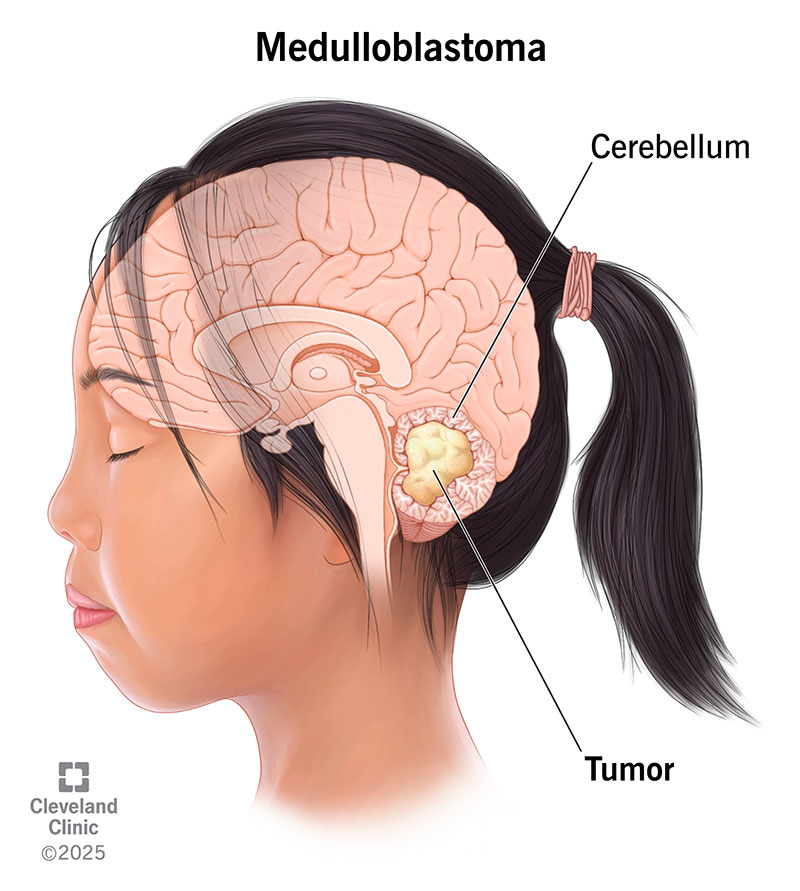
A malignant, invasive embryonal tumor of the cerebellum, most often seen in children and young adults.
Epidemiology
- Accounts for ~20–25% of CNS tumors in children — the most common malignant pediatric brain tumor
- Peak incidence in the first decade of life
- Midline presentation in children (cerebellar vermis); can be more lateral in adults
- By definition, exclusively located in the cerebellum
- Associated with Turcot syndrome
Behavior & Prognosis
- Highly malignant, but notably radiosensitive
- 5-year survival now >50%; modern series report 60–80%, approaching ~75% with adequate resection + radiotherapy (including prophylactic spinal radiation)
- Derived from cerebellar granule cell precursors at the edge of the fourth ventricle
At least four molecular subgroups are recognized:
- WNT-activated type
- SHH-activated, TP53-wildtype type
- SHH-activated, TP53-mutant type
- Non-WNT/non-SHH type
Alterations in Sonic Hedgehog (SHH) pathway genes → very low survivability. Alterations in the WNT/β-catenin pathway → typically a survivable lesion. Other poor prognostic factors: inadequate resection, presence of drop metastases, ERBB2 mutation.
Clinical signs are typically present for less than three months before diagnosis.
- Common: headaches (↑ICP), persistent vomiting (↑ICP), truncal ataxia (sometimes spasticity), papilledema (↑ICP), nystagmus
- Less common: limb ataxia, dysdiadochokinesia
Invasion/compression of the fourth ventricle → non-communicating hydrocephalus → raised ICP. Drop metastases to the spinal cord via CSF/leptomeningeal seeding are common and can cause paraplegia — this is why the diagnostic workup includes CSF cytology and often the entire neuraxis is imaged.
| Modality | Finding |
|---|---|
| CT | Isodense to hyperdense intraparenchymal mass |
| MRI | T1 hypointense, T2 isointense, contrast-enhancing mass filling the fourth ventricle |
| Angiography | Can also be useful |
| Lumbar puncture + CSF cytology | Evaluates for leptomeningeal ("drop met") spread |
| Stereotactic biopsy/cytology | Small round blue cells around neuropil — Homer-Wright rosettes |
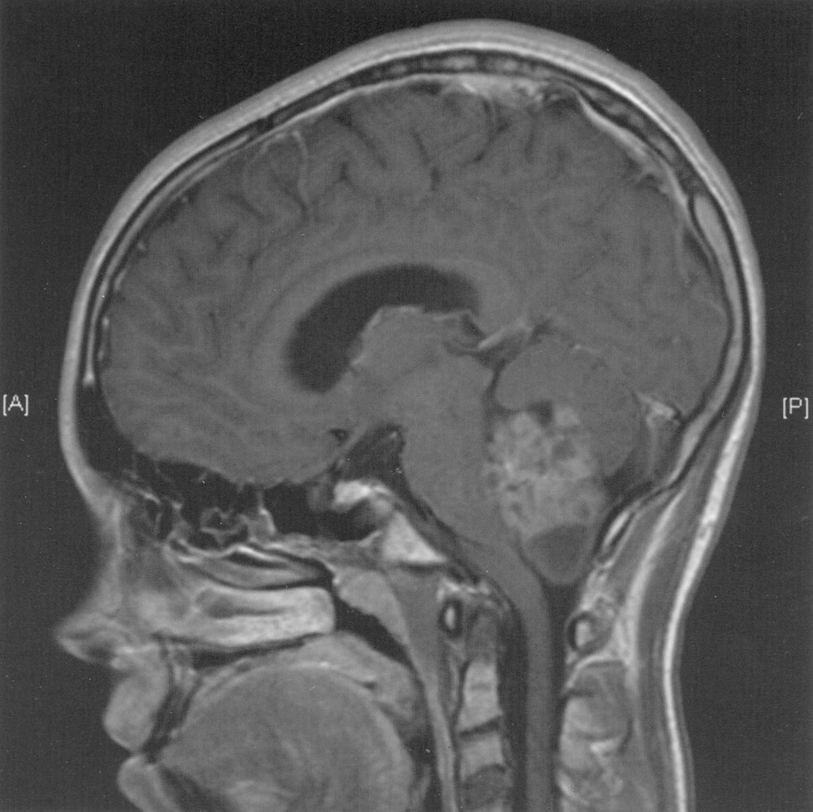
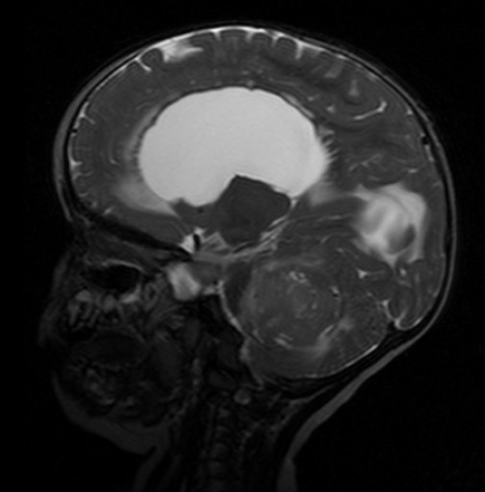
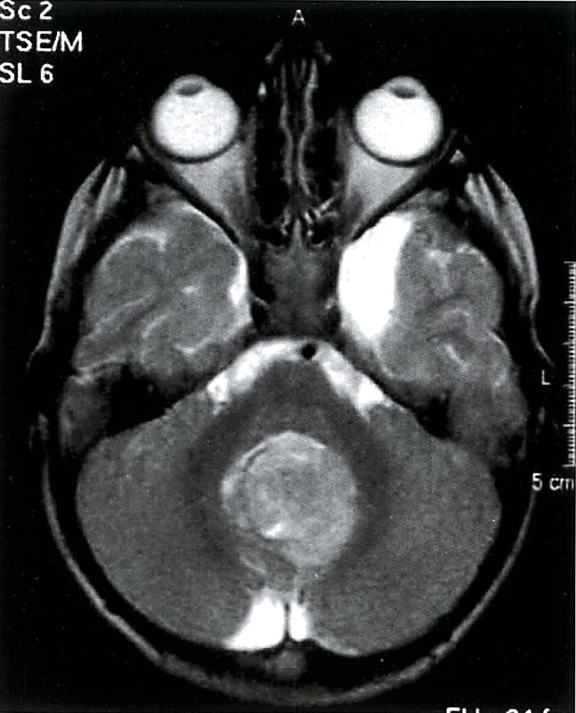
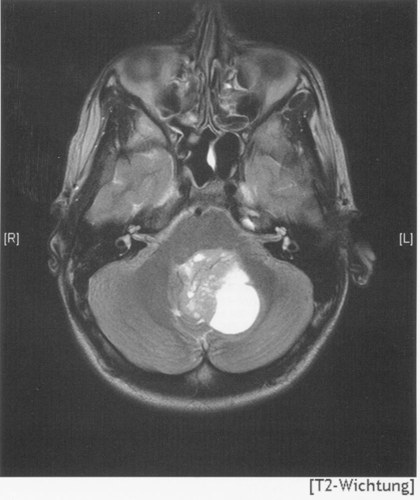
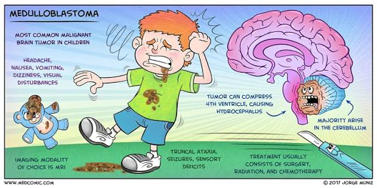
Don't confuse medulloblastoma with pilocytic astrocytoma — both are pediatric posterior fossa tumors, but medulloblastoma is midline (vermian), highly malignant, small-round-blue-cell on histology, and prone to CSF/drop metastases; pilocytic astrocytoma is more often lateralized, WHO Grade I, cystic-with-mural-nodule on imaging, and shows Rosenthal fibers rather than Homer-Wright rosettes.
Meningioma
"A 62-year-old woman is found to have an incidental extra-axial mass on brain MRI obtained after a minor head injury. She reports no neurologic symptoms, though admits to occasional mild headaches over the past year. MRI shows a round, sharply demarcated, homogeneously enhancing extra-axial mass along the right frontal convexity, with a thickened, enhancing tail of adjacent dura. There is no evidence of brain invasion. Which of the following is the most likely diagnosis?"
Meningiomas are usually slow-growing, benign tumors arising from the meningeal coverings of the brain — specifically the meningothelial (arachnoid cap) cells of the arachnoid layer/villi. A small percentage are malignant and aggressive.
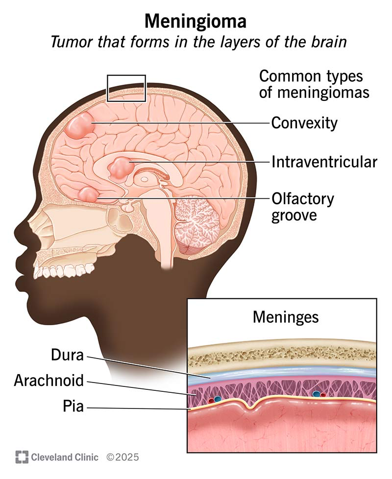
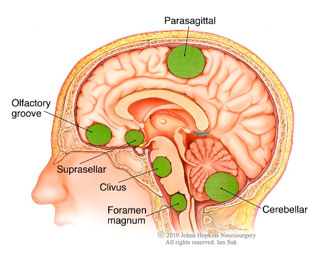
Epidemiology
- ~37% of all primary intracranial neoplasms — the most common benign primary brain tumor in adults
- Incidence ~8.33 per 100,000 person-years
- Most common in the 6th–7th decades of life (>65 yrs); rare in children
- Females > males (~2.2:1)
- In children, often associated with NF2
Etiology / Risk Factors
- Mostly idiopathic
- Established risk factor: ionizing radiation (radiotherapy, dental X-rays)
- Sex hormones may play a role
- SV-40 viral infection implicated
- Multiple meningiomas → consider NF2
Convexities of the cranium, along the falx, and the skull base — see LO2 for the full location-by-symptom breakdown.
Usually solitary, lobulated, encapsulated tumors attached to the meninges — grayish-white, firm, with a granular cut surface. Typically expand and compress CNS tissue rather than invade it, though they can invade skull bone (not itself a sign of malignancy).
Microscopic Findings
- Whorls of meningothelial cells ("onion-peel" arrangement)
- Psammoma bodies
- Increased vascularity
| Grade | Frequency | Histologic Criteria | Example Subtypes |
|---|---|---|---|
| I — Benign | 80–85% | No dysplastic features; <4 mitoses/10 hpf | Meningothelial, transitional, fibrous, psammomatous, angiomatous, microcystic, secretory |
| II — Atypical | 15–20% | 4–19 mitoses/10 hpf | Chordoid, clear cell, atypical |
| III — Anaplastic/Malignant | <2% | >20 mitoses/10 hpf | Papillary, rhabdoid, anaplastic (most aggressive) |
Course notes also describe a Grade IV "meningeal sarcoma" category; progression of tumor grade can occur over time and is associated with loss of chromosomal material.
- Loss of chromosome 22 (harbors the NF2 gene)
- NF2 gene mutation
- TRAF7 (TNF receptor-associated factor 7)
- KLF4 (Kruppel-like factor 4)
- AKT1
- SMO (Smoothened)
- PIK3CA
Often asymptomatic — frequently an incidental imaging finding. When symptomatic, presentation reflects compression of adjacent structures rather than invasion.
- Seizures — most common presenting complaint
- Focal neurologic deficits from compression: hemiparesis, gait disturbance
- General: headaches, paresthesias
| Location | Frequency | Key Features |
|---|---|---|
| Supratentorial convexity | ~20% | Headache, seizures, neurologic deficits |
| Parasagittal | ~19% | Headache, seizures, lower extremity weakness |
| Falx cerebri | ~8% | Similar to parasagittal |
| Sphenoid wing | ~20% | Visual defects, facial hypesthesia |
| Posterior cranial fossa | ~10% | Sensorineural hearing loss, facial nerve palsy, unsteady gait |
| Olfactory groove | ~10% | Anosmia, visual defects (Foster-Kennedy syndrome) |
| Foramen magnum | ~2% | Classic sensorimotor progression (unilateral arm → ipsilateral leg → contralateral leg → contralateral arm); late spastic quadriparesis, lower cranial nerve palsies |
| Intraventricular | <1% | Headache, papilledema (obstructive hydrocephalus) |
| Spinal | ~10% | Back pain, paraplegia |
Plain MRI: round, sharply demarcated extra-axial lesion; T1 iso-/hypointense, T2 iso-/hyperintense; dural tail sign.
Contrast MRI: significant homogeneous enhancement, often described as a "snowball"; "sunburst"/"spoke-wheel" appearance; spinal meningioma may show the "ginkgo-leaf sign" (distorted enhancing cord + stretched non-enhancing dentate ligament).
En plaque meningioma — a rare subtype with diffuse, carpet-like growth along the dura.
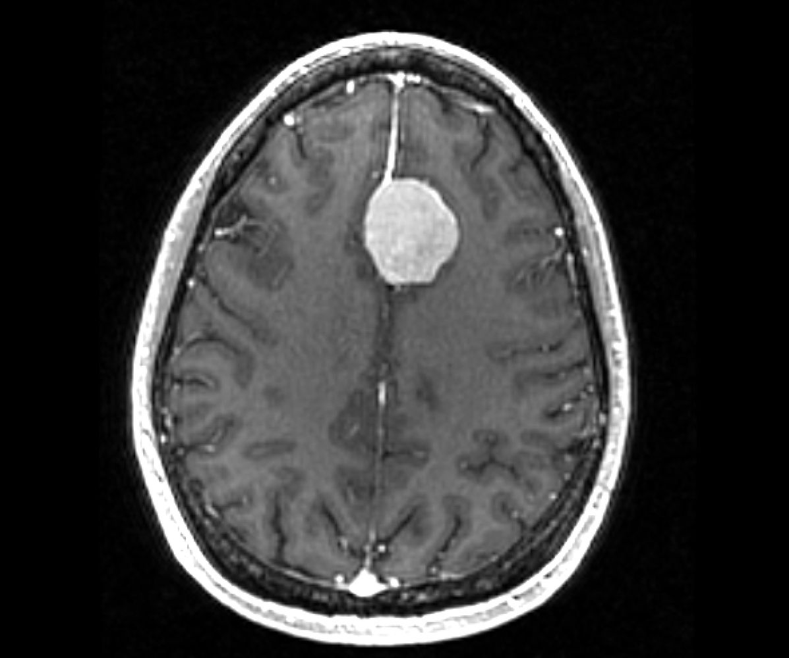
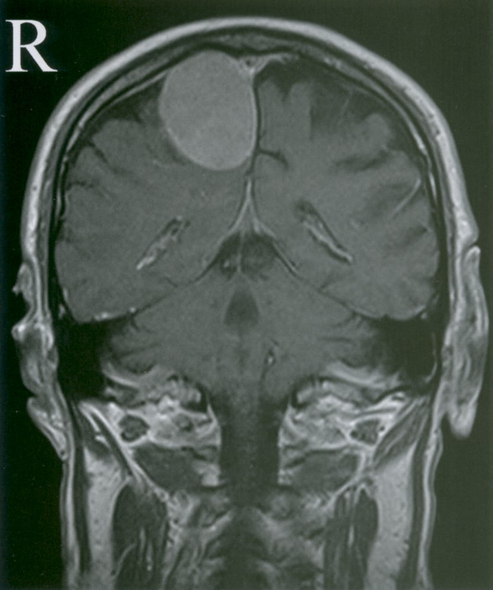
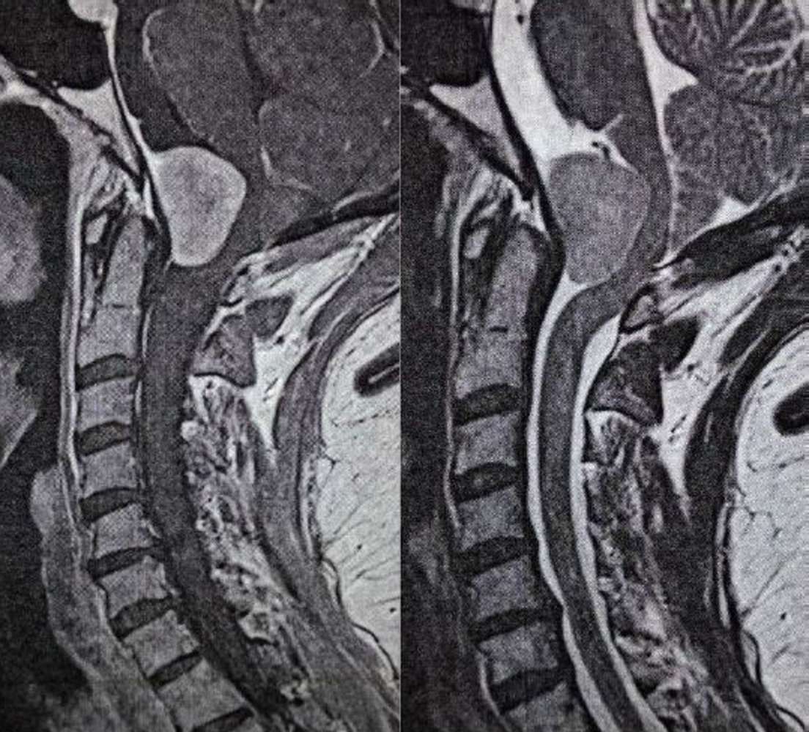
CT
Hyperdense or isodense, well-demarcated extra-axial mass; possible calcifications. Often the modality that first picks up an incidental meningioma during workup of unrelated headache/seizure.
Other
Angiography can also be useful. Genetic typing of tumor cells. Biopsy is rarely needed — most meningiomas are diagnosed on imaging alone; reserved for inoperable tumors or inconclusive imaging.
The dural tail sign and homogeneous, "snowball"-like enhancement on contrast MRI are the highest-yield clues that a mass is extra-axial and meningeal (meningioma) rather than an intra-axial glioma.
Ependymoma
"A 4-year-old boy presents with a one-month history of morning vomiting, increasing lethargy, and an enlarging head circumference noted by his pediatrician. His parents also report new-onset unsteadiness when walking. Examination reveals ataxia and bilateral papilledema. MRI of the brain shows an intraparenchymal mass centered in the fourth ventricle with scattered calcifications and cystic areas, causing non-communicating hydrocephalus. Biopsy shows tumor cells forming perivascular pseudorosettes with rod-shaped blepharoplasts near the nucleus. Which of the following is the most likely diagnosis?"

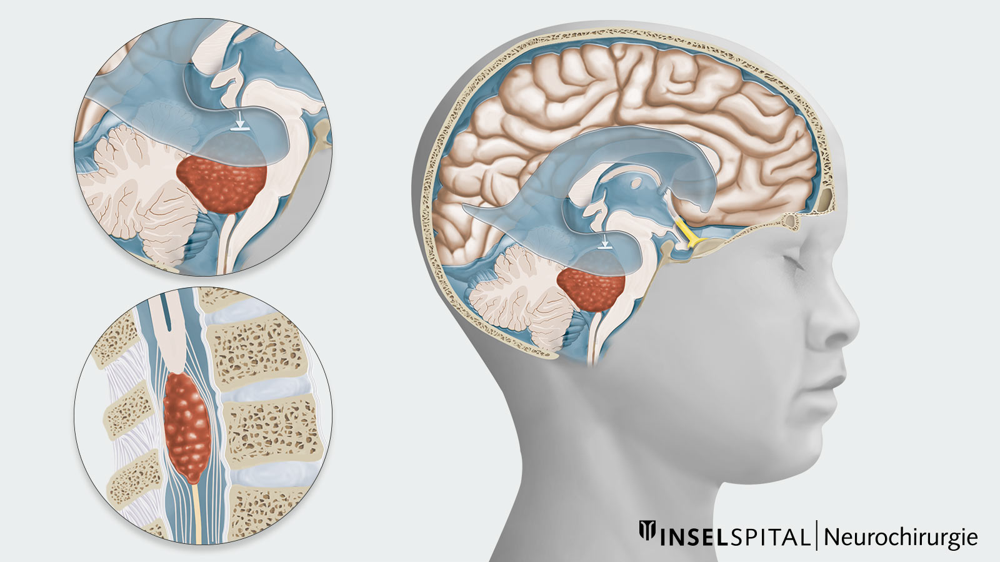
Ependymomas are a heterogeneous group of primary CNS tumors of glial cell origin, found throughout the ventricular system of the brain and spinal cord.
Epidemiology
- 5–10% of primary brain tumors in the first two decades of life
- Median age at diagnosis: 5 years
- Most common tumor of the fourth ventricle
- Distribution is age-dependent: intracranial (4th ventricle) most common in children; spinal most common in adults
- Average survival post-surgery ~4 years for 4th ventricle tumors; overall 5-yr survival 65–90% depending on grade
Etiology
- Mostly unknown; thought to arise from radial glial cells
- Spinal ependymomas can be associated with an NF2 gene mutation (chromosome 22); ~20% of NF2 carriers develop an intramedullary spinal ependymoma
- Recurrence rate depends on location, grade, molecular subtype, and treatment
Most are well-differentiated tumors with relatively slow growth. Cohesive tumor cells with intercellular junctions form tubules; classic histology shows perivascular pseudorosettes and rod-shaped bodies near the nucleus (blepharoplasts).
Grade 1
Slow-growing, mostly benign
Grade 2
Slow-growing, increased risk of malignancy
Grade 3
Malignant and aggressive
The older histopathology-only classification has been abandoned in favor of a system based on molecular pathology.
| Category | Subtype | Key Features |
|---|---|---|
| Supratentorial (children; gene-fusion driven) | ST-ZFTA (ZFTA fusion+) | ZFTA::RELA fusion product activates NF-κB |
| ST-YAP1 (YAP1 fusion+) | — | |
| ST-SE (subependymoma) | — | |
| Posterior fossa | PFA | Infants/young children; hypermethylated; lacks H3K27me3; poor prognosis |
| PFB | Older children/adults; lower methylation; retains H3K27me3; better prognosis | |
| PF-SE (subependymoma) | — | |
| Spinal (adults) | SP-EP | Grade 2; often NF2-associated |
| SP-MYCN (MYCN amplified) | Grade 3; dismal prognosis | |
| SP-SE (subependymoma) | Grade 1; diagnosed by location/histology alone | |
| SP-MP (myxopapillary) | Grade 1–2; slow-growing; lumbar region; most common in young adults |
ZFTA is a zinc-finger gene commonly fused to RELA (ZFTA::RELA), activating NF-κB — though most occur supratentorially, rare cases have been reported in the fourth ventricle. MYCN encodes the N-Myc transcription factor, essential for normal fetal/embryonic development; its amplification or overexpression is a major driver of aggressive, high-risk cancers.
Signs of increased ICP: vomiting, ataxia, headache, lethargy, increased head circumference, irritability — plus seizures and focal deficits.
Older Children
- Ataxia
- Nystagmus
- Gaze palsy
- Hemiparesis
- Neck pain
Central Canal (Spinal) Ependymomas
- Central cord syndrome
- Partial or complete transverse myelopathy
- Radiculopathy
| Modality | Finding |
|---|---|
| CT | Intraparenchymal tumor with calcifications and cystic components (from necrosis/hemorrhage) |
| MRI | Same features, with superior soft-tissue detail |
| Stereotactic biopsy | Perivascular pseudorosettes, blepharoplasts — plus gene analysis and DNA methylation profiling, essential for the current molecular classification |
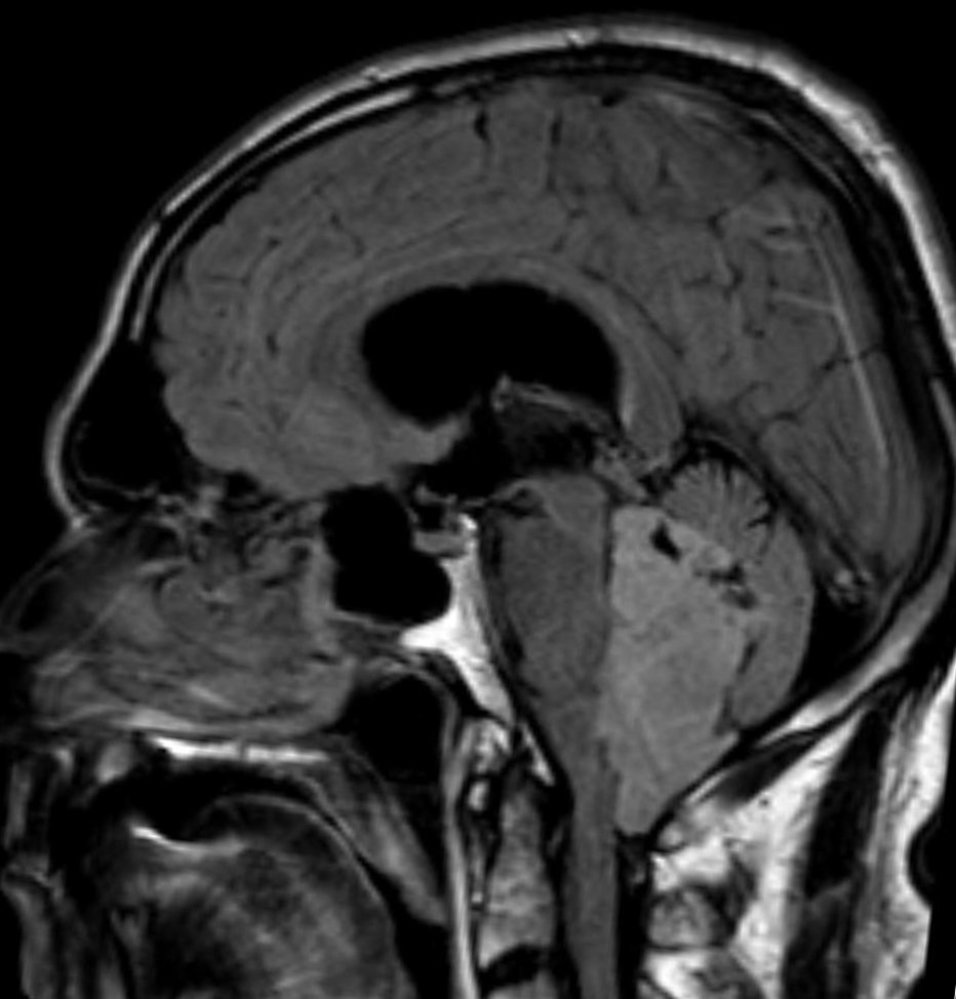
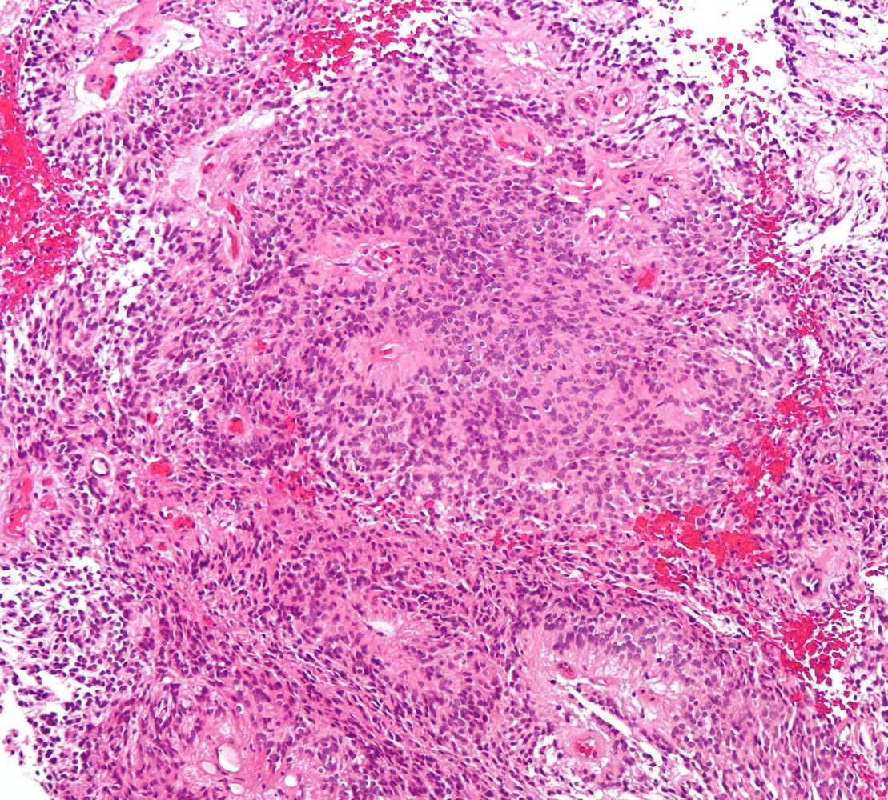
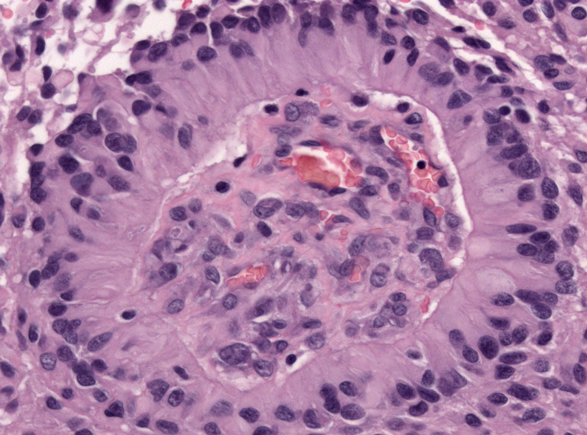
Perivascular pseudorosettes + blepharoplasts are ependymoma's histologic signature — don't confuse them with medulloblastoma's Homer-Wright rosettes (small round blue cells) or pilocytic astrocytoma's Rosenthal fibers, the other two classic pediatric posterior fossa tumors.
Craniopharyngioma
"An 8-year-old boy presents with six months of headaches, and his parents note he has fallen behind his peers in height over the past year. He has also been unusually thirsty and urinating frequently, both day and night. Visual field testing reveals bitemporal hemianopsia. MRI of the brain shows a suprasellar, partially cystic, calcified mass compressing the optic chiasm and extending toward the third ventricle. Which of the following is the most likely diagnosis?"
Craniopharyngiomas are common childhood tumors derived from squamous epithelial cell rests — remnants of Rathke's pouch (an ectodermal derivative). These typically cystic tumors lie above the sella turcica (suprasellar), applying pressure to the optic chiasm and extending into the third ventricle.
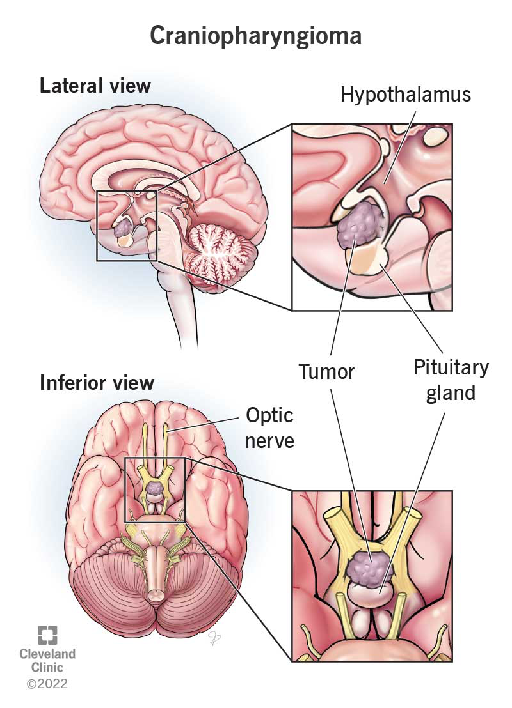
Epidemiology
- Rare overall — ~350 new cases/year in the US
- Bimodal age distribution: 5–14 years (adamantinomatous); 50–70/75 years (papillary)
- Accounts for 7–10% of all childhood tumors; the most common childhood supratentorial tumor
Histologic Variants
- Adamantinomatous (common): CTNNB1 (β-catenin/Wnt pathway) mutation; reticular epithelial cells, frequent calcifications, cysts, keratin nodules
- Papillary: metaplastic squamous cells; calcifications/cysts rare; no keratin nodules
Arises in the suprasellar region and can extend intrasellarly, compressing adjacent structures — the pituitary gland, hypothalamus, infundibular stalk, optic chiasm, and ventricular system — producing a well-known constellation of endocrine, visual, and hydrocephalic effects (see LO2).
Other sellar/suprasellar masses to consider: pituitary adenoma, Rathke cleft cyst.
- Headaches
- Bitemporal hemianopsia
- Diabetes insipidus and growth hormone deficiency
- Growth retardation and sexual dysfunction
- Increased intracranial pressure
| Structure Compressed | Effect |
|---|---|
| Pituitary gland (intrasellar extension) | Hypopituitarism → hypogonadotropic hypogonadism, failure to thrive, central diabetes insipidus |
| Ventromedial hypothalamic nucleus | Hyperphagia and obesity |
| Infundibular stalk | Disconnection hyperprolactinemia |
| Optic chiasm | Bitemporal hemianopsia |
| Interventricular foramina / aqueduct | Obstructive hydrocephalus |
| Modality | Finding |
|---|---|
| MRI | Suprasellar calcified cyst with a lobulated contour |
| Biopsy (gross exam) | Cholesterol crystals in "motor oil"-like fluid |
| Endocrine workup | Consider diagnostics for hypopituitarism given the high rate of endocrine involvement |
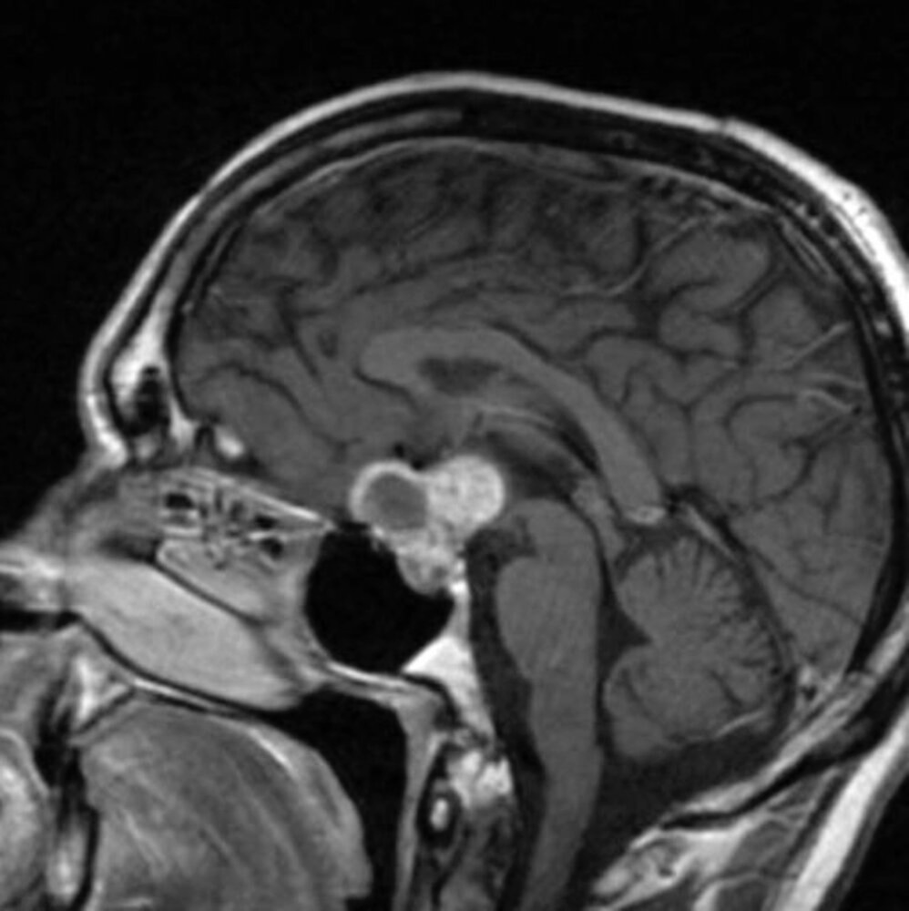
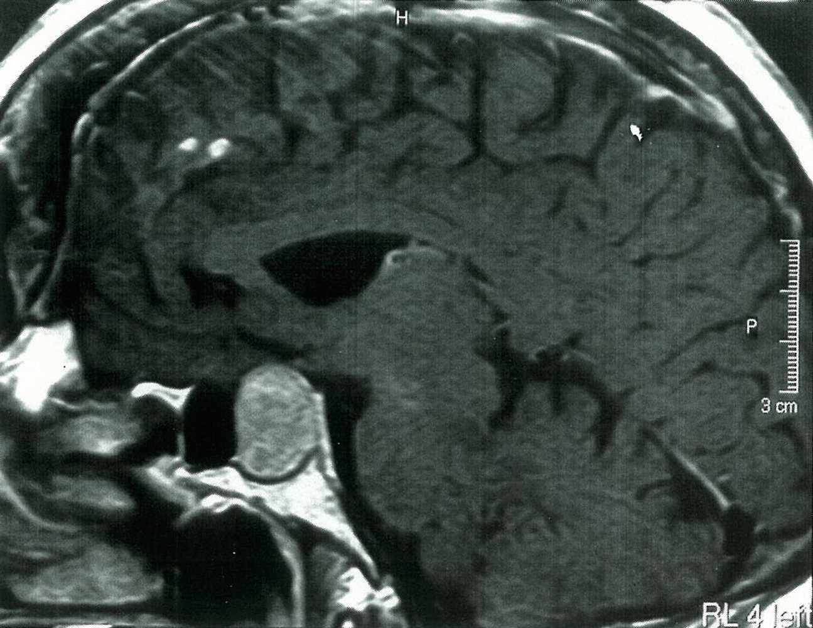
Adamantinomatous — Histology
Reticular epithelial cells; frequently calcified; cysts and keratin nodules.
Papillary — Histology
Metaplastic squamous cells; calcifications/cysts rare; no keratin nodules.
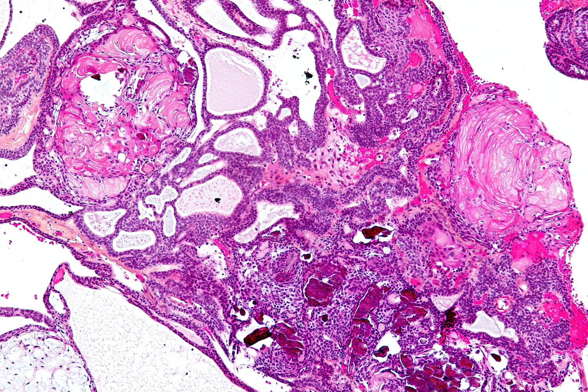
Age at presentation is a strong subtype clue: a child (5–14) with a suprasellar mass is far more likely adamantinomatous (CTNNB1/Wnt-pathway mutant); an older adult (50–70s) is more likely papillary.
Ganglion Cell Tumors (Gangliocytoma)
"A 14-year-old girl with a two-year history of recurrent focal seizures, refractory to two anti-seizure medications, undergoes MRI of the brain. Imaging reveals a small, well-circumscribed, partially calcified cortical lesion in the right temporal lobe with minimal surrounding edema and mild contrast enhancement. Resection is performed, and histology shows abnormal, large, mature multipolar neurons without any accompanying neoplastic glial component. Which of the following is the most likely diagnosis?"
A CNS tumor composed of mature-looking neurons. When the tumor also contains neoplastic glial-like cells, it is instead termed a ganglioglioma.
Epidemiology
- Very rare — 0.1–0.5% of all brain tumors, but 1–3% of tumors in epilepsy surgical series
- Occurs mostly in the first three decades of life; peak age 10–30 years
- WHO Grade 1; one of the long-term epilepsy-associated tumors (LEATs), frequently discovered as the cause of epilepsy
Pathology & Location
- >80% found in the temporal lobes; can arise anywhere in the neuroaxis
- Slow-growing, indolent — does not undergo anaplastic transformation (unlike ganglioglioma, which rarely can)
- Histology: large, often multipolar mature neurons, sometimes binucleated, with cytoplasmic vacuolization; microcalcification can be seen
Absence of neoplastic glial cells (present in ganglioglioma) and absence of a small-round-blue-cell/neuroblast component (which would instead suggest medulloblastoma or neuroblastoma). Immunophenotype confirms a purely neuronal lineage: synaptophysin+, neurofilament+, chromogranin-A+, MAP2+, GFAP−.
Not to be confused with dysplastic cerebellar gangliocytoma (Lhermitte-Duclos disease) — a different, cerebellum-specific entity despite the similar name.
GFAP-negative is the single most useful immunostain here — a positive GFAP would suggest a glial (or mixed glioneuronal) component, pointing toward ganglioglioma instead.
Neurofibromatosis Type II (NF2)
"A 22-year-old woman presents with progressive bilateral hearing loss and tinnitus over the past year, along with recent unsteadiness. She also reports blurry vision and was recently diagnosed with cataracts. Family history is notable for a mother who required surgery for "multiple brain tumors" in her 30s. MRI of the brain with contrast reveals bilateral enhancing masses at the cerebellopontine angles involving the internal auditory canals, along with two separate dural-based enhancing masses along the falx. Which of the following is the most likely underlying diagnosis?"
Neurofibromatosis is a familial tumor syndrome — really a spectrum of hereditary neurocutaneous syndromes. Two distinct forms exist, each with a separate genetic origin: NF1 characteristically involves the peripheral nervous system; NF2 characteristically involves the central nervous system.
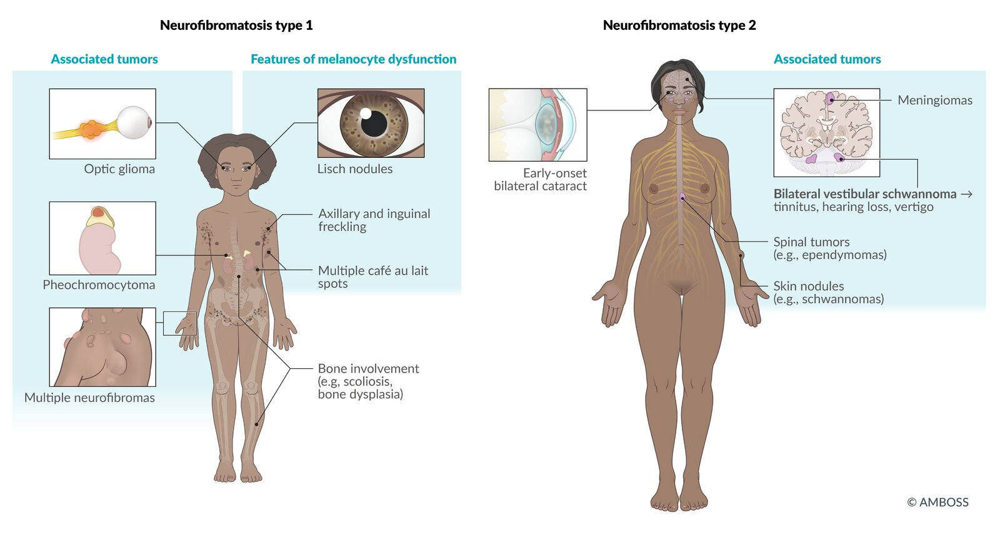
Epidemiology & Genetics
- NF1 (for contrast): common, autosomal dominant, incidence ~1/3,000–4,000
- NF2: much less common — 1/40,000–50,000 (possibly as high as 1/25,000 by newer molecular-genetic estimates)
- NF2 gene located on chromosome 22; encodes merlin (schwannomin), a tumor suppressor
Associated Tumors (NF2)
- Acoustic (vestibular) schwannomas — classically bilateral
- Multiple meningiomas
- Ependymomas (including spinal cord)
- Spinal cord/meningeal gliomas
- Nodular Schwann cell growths in the spinal cord
- Meningoangiomatosis; glial hamartia
Typical onset is around 20 years of age.
Neurologic
- Vestibular nerve + other cranial nerve involvement
- Mass effect from intracranial meningiomas
- Intra-/extramedullary spinal cord and meningeal tumors
- Peripheral neuropathies
Eye
- Cataracts
- Epiretinal membranes
- Retinal hamartomas
Skin
- Cutaneous tumors
- Skin plaques
- Subcutaneous tumors
Specific features depend on tumor type and location — but bilateral vestibular schwannomas are the defining, most consistent feature of NF2.
Merlin (NF2 gene product, chromosome 22) parallels neurofibromin (NF1 gene product, chromosome 17) — both are tumor-suppressor proteins, but their loss produces very different tumor spectra: NF1 → peripheral neurofibromas/café-au-lait spots/optic gliomas; NF2 → bilateral vestibular schwannomas/multiple meningiomas/ependymomas.
Tuberous Sclerosis Complex
"A 2-year-old boy is brought in for evaluation of new-onset seizures characterized by sudden head bobbing and flexor spasms occurring in clusters, along with recent behavioral regression. On examination, his mother points out several hypopigmented, ash-leaf-shaped macules on his trunk present since birth, along with a rough, orange-peel-textured plaque over his lower back. Brain MRI shows several calcified subependymal nodules along the lateral ventricle walls, as well as multiple cortical hamartomas. Which of the following is the most likely diagnosis?"
Tuberous sclerosis complex (TSC) is a neurocutaneous genetic disorder with systemic manifestations, including CNS involvement. It belongs to the group of neurocutaneous disorders called phakomatoses.
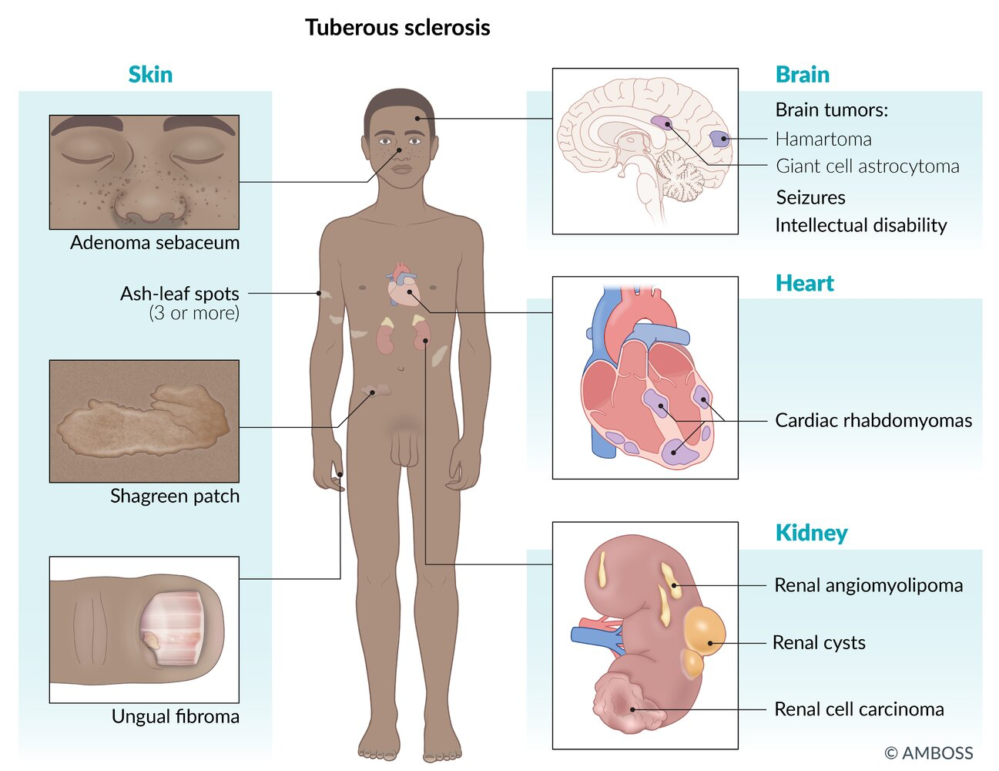
Epidemiology & Genetics
- Autosomal dominant with highly variable penetrance (or spontaneous mutation)
- Prevalence ~1/6,000
- TSC1 (chromosome 9q34) encodes hamartin; TSC2 (chromosome 16p13) encodes tuberin
Pathophysiology
Mutation of these tumor-suppressor genes → loss of function → unchecked cell growth → hamartoma/tumor development. Cortical tubers are benign brain hamartomas; systemic pathology (renal, cardiac, skin) is present as well.
Renal disease and epilepsy are the most common causes of death; life expectancy can be normal if symptoms are mild and complications are managed.
Hamartomas, Ash-leaf spots, Mental (intellectual) disability, Adenoma sebaceum, renal Angiomyolipoma, Rhabdomyoma, Tumor suppressor genes (TSC1/TSC2), autOsomal dominant, Mitral regurgitation, Astrocytomas, Seizures, and Shagreen patches.
- Hypomelanotic (ash-leaf) macules — present since birth; 3+ is diagnostic; seen with a Wood lamp
- Adenoma sebaceum (facial angiofibromas) — onset age 3–4; butterfly distribution around nose/cheeks; acne-like appearance
- Shagreen patch — flesh-colored, orange-peel-textured plaque, classically lumbosacral
- Ungual fibromas — subungual/periungual papules
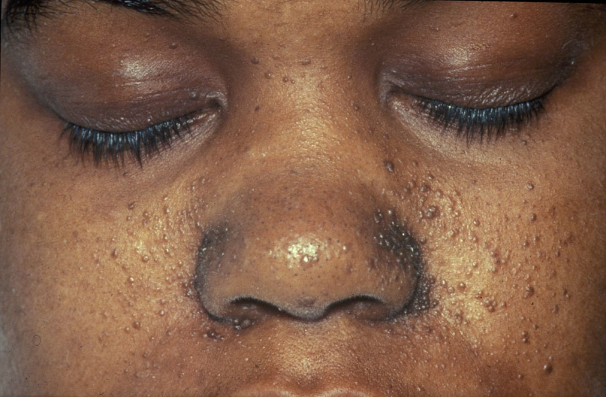
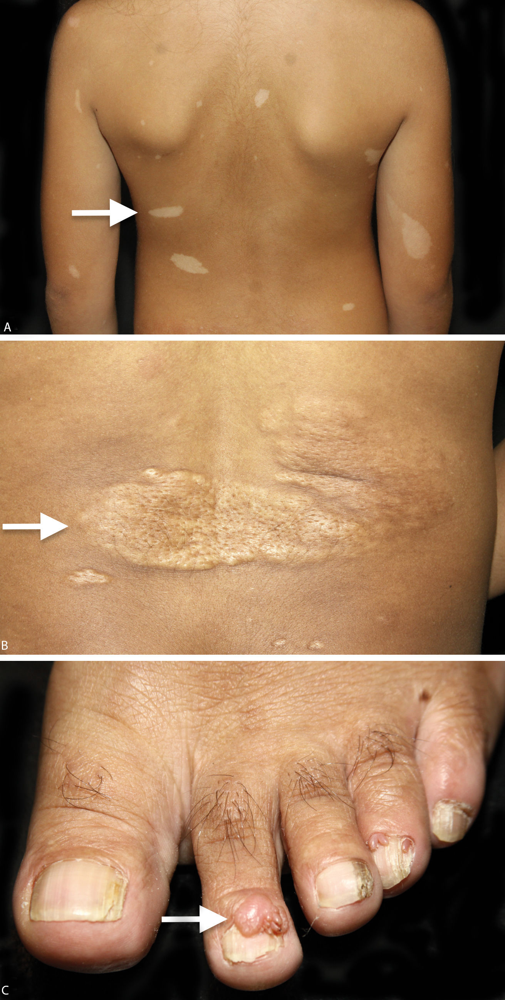
Brain
- Seizures, including infantile spasms (<3 yrs — head bobbing, flexor/extensor spasms, may mimic startle; can cause psychomotor regression)
- Intellectual disability (from brain lesions)
- Subependymal calcified nodules (lateral/third ventricle walls)
- Cortical/subcortical hamartomas (tubers)
- Subependymal giant cell astrocytoma — periventricular; can cause obstructive hydrocephalus if symptomatic
- Hydrocephalus in some cases
Other Organs
- Retinal mulberry tumors (hamartomas)
- Cardiac rhabdomyoma (>50% of patients; can cause mitral regurgitation/CHF)
- Renal cysts, angiomyolipoma, (rarely) carcinoma
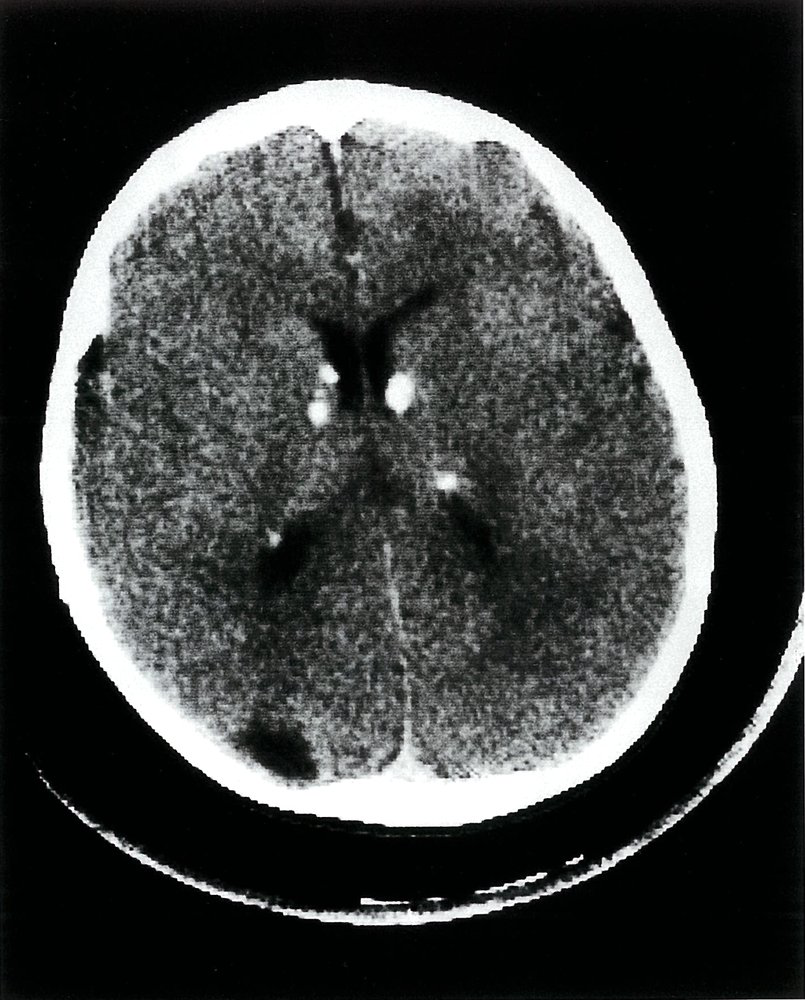
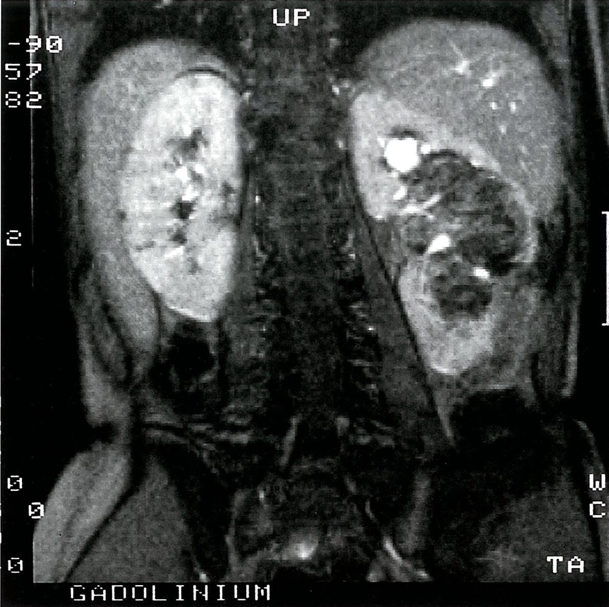
Primary CNS Lymphoma
"A 68-year-old man with poorly controlled HIV/AIDS (CD4 count 40) presents with two weeks of progressive personality changes and word-finding difficulty, along with new left-sided weakness. MRI of the brain with contrast shows a solitary, homogeneously enhancing periventricular mass. Stereotactic biopsy reveals sheets of malignant lymphoid cells with an angiocentric growth pattern, and in situ hybridization is positive for Epstein-Barr virus. Which of the following is the most likely diagnosis?"
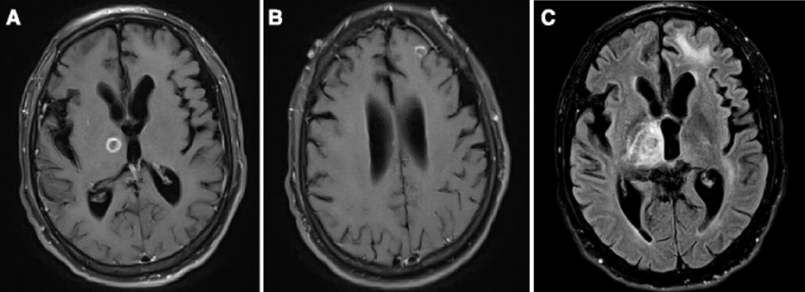
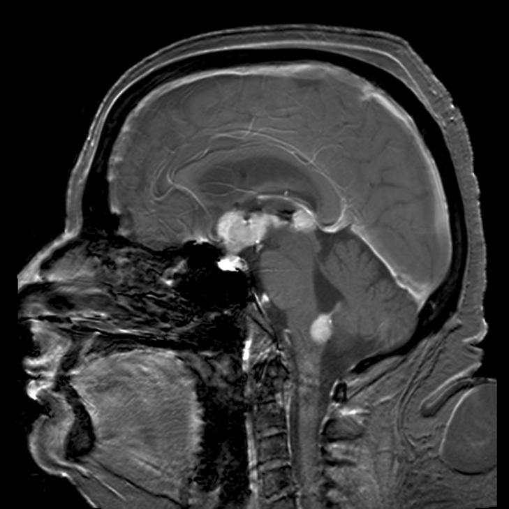
In primary CNS lymphoma (PCNSL), the disease initiates intracranially; metastatic extracranial spread, if it occurs, is a late event. This must be distinguished from secondary CNS lymphoma — metastatic spread to the brain from a non-Hodgkin lymphoma located elsewhere in the body.
Epidemiology
- Accounts for ~1% of intracranial tumors
- Incidence rising in older patients (>60; highest in the 70s)
- ~1,500 new cases/year in the US
- Strong risk factor: immunosuppression (e.g., poorly controlled HIV/AIDS) and/or EBV infection — relatively common in immunocompromised patients; suspected patients should be tested for HIV
Pathology
- Majority: B-cell lymphoma, large cell type
- Tumors in immunosuppressed patients typically contain the EBV genome
- Malignant lymphoid cells with mitotic activity, necrosis, and a characteristic angiocentric pattern (surrounding vessels)
- Can present as a single focal mass or multifocal lesions
Responds initially to radiation and steroid therapy, but tumors tend to recur. Overall prognosis is variable — typically better than other primary CNS tumors, but less favorable than non-CNS lymphomas.
Glucocorticoids can rapidly shrink PCNSL and obscure biopsy findings (the "ghost tumor" effect) — this is why steroids are typically withheld until diagnostic tissue is obtained, except in life-threatening raised ICP.